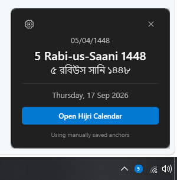
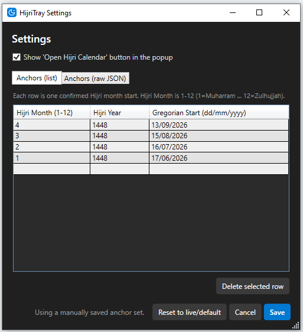

Hijri Calendar
Default calendar for Bangladesh
HijriTray for Windows
A tiny app that lives in your Windows system tray and shows today's Hijri date for Bangladesh. One click on the taskbar icon opens the date card - no browser, no account, no ads.

Windows 10 and Windows 11 · 64-bit · free, no installation key needed
What it does
Always in the tray
The icon sits next to your clock. Click it for today's Hijri date in English, Arabic and Bengali.
Editable anchors
Add or edit confirmed month start dates yourself from the settings window, as a list or as raw JSON.
Live or manual
Use the live dates published on hijri.iiuc.net, or pin your own saved anchor set and reset to live any time.
Very light
Minimal memory use, no background noise, and a single button to open the full web calendar.
Screenshots

How to install
- Download the setup file using the button above.
- Run the installer. Windows SmartScreen may warn that the publisher is unrecognised, because the build is not code-signed yet. Choose More info → Run anyway to continue.
- Finish the setup wizard. HijriTray starts automatically when it is done.
- Find the icon. Look next to the clock; if it is hidden, click the small arrow on the taskbar and drag the HijriTray icon into the visible area.
- Adjust if needed. Open the gear icon in the popup to review the confirmed month start dates or to reset back to the live Bangladesh default.
Only download HijriTray from this page. If a copy comes from anywhere else, we cannot guarantee that it is the genuine build.
Downloads & version history
The newest release is listed first and is the one we recommend. Older builds are kept available in case you need to roll back.
| Version | File | Notes | Download |
|---|
Show older versions
| Version | File | Notes | Download |
|---|
Common questions
Which versions of Windows are supported?
Windows 10 and Windows 11, 64-bit. Older versions of Windows are not tested.
Why does Windows warn me before installing?
The installer is not code-signed yet, so SmartScreen shows an unknown-publisher warning for it. Choosing More info and then Run anyway lets the setup continue.
Does it update itself?
Not yet. When a new build is released it appears at the top of the table above - download it and run it over your existing installation.
Can I use it without the internet?
Yes. HijriTray keeps the last known month start dates, and you can also save your own anchor set in settings so it works entirely offline.
Is there a browser version?
Yes - the browser extension shows the same date on every new tab in Edge, Chrome and other Chromium browsers.